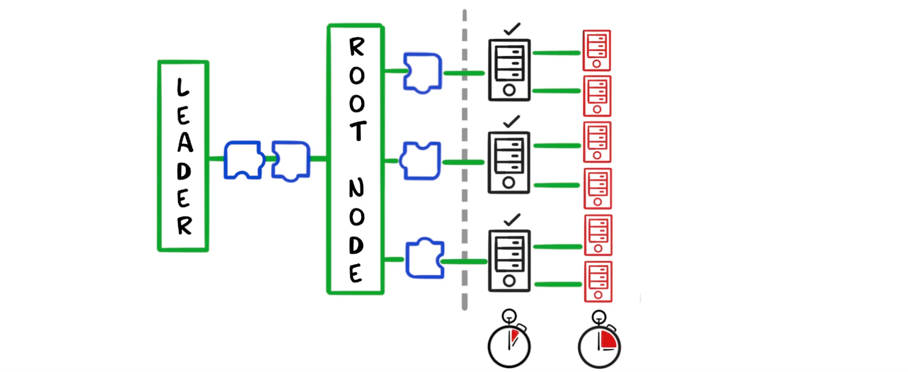
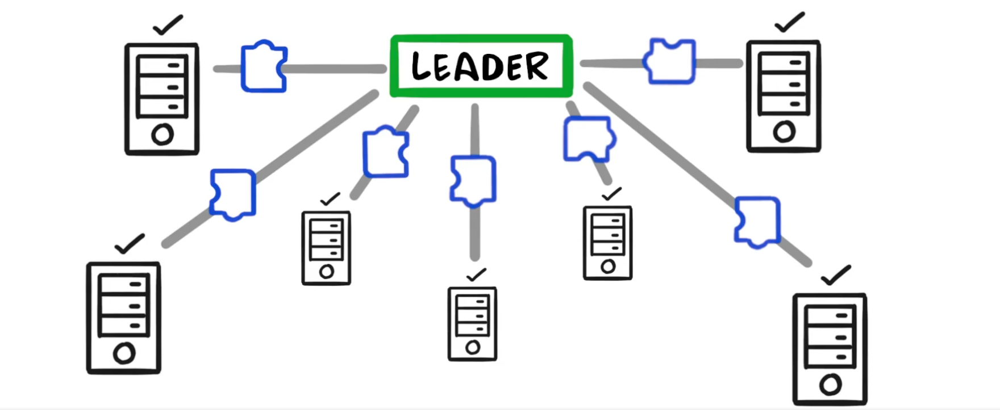
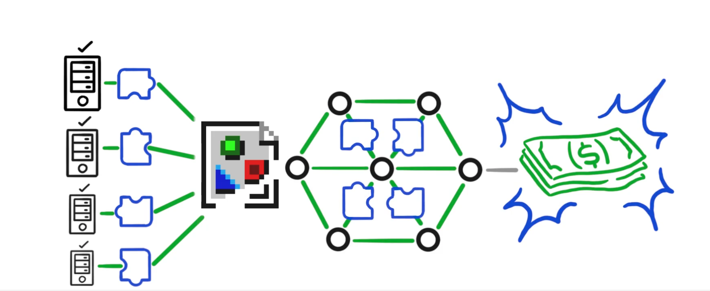

Toly & Max Resnick (Anza) — pour battre le NYSE sur les spreads,
3 prérequis sont identifiés :
Annulations avant prises — nouvelle politique d'ordre des transactions
Leaders concurrents pour éliminer la censure unilatérale
Les leaders doivent valider au même instant → nécessite un réseau avec jitter minimal
BlockhashNotFound
L'internet public, c'est une route nationale partagée avec tout le monde.
DoubleZero, c'est une autoroute privée réservée aux validateurs Solana —
plus courte, sans détours, sans embouteillages.
2ZSlot skip rate réduit → votre blockhash reste valide plus longtemps → moins de BlockhashNotFound, moins de retries à gérer dans votre code.
Shreds livrés plus vite → blocs confirmés plus tôt → finality accélérée. Vos utilisateurs ne fixent plus un spinner.
L'équité temporelle rend le front-running aveugle structurellement plus difficile. Meilleure protection pour vos utilisateurs et vos protocoles DeFi.
Cancel-before-fill, fair sequencing, ordres limites on-chain… Des primitives financières impossibles sans jitter minimal deviennent réalisables.
DoubleZero est une infrastructure de protocole — vous n'intégrez pas de SDK. Vous en bénéficiez dès que votre RPC ou vos validateurs s'y connectent.
Les données voyagent dans une enveloppe privée, invisible depuis l'extérieur. Personne sur l'internet public ne peut voir ni intercepter le trafic des validateurs.
Dès qu'un validateur se connecte, tout le réseau sait comment l'atteindre en quelques secondes — sans configuration manuelle.
Le trafic de consensus (blocs, votes) ne partage jamais la même voie que le trafic de maintenance. Un pic de monitoring ne peut pas ralentir le consensus.
Découpé en shreds pour la distribution via Turbine
Via tunnel GRE (mode IBRL) — aucun saut FAI, pas d'internet public
Dédup shreds + validation format + rate limiting — en matériel, au débit ligne
2-4 sauts sur fibre dédiée, MTU 9000, routage optimisé
Jitter minimal → shreds arrivent dans l'ordre → reconstruction rapide du bloc
Tower BFT dans le mesh — fenêtre de vote utilisée efficacement
Chaque validateur déduplique seul
1000× le même travail redondant
CPU gaspillé sur du bruit réseau
→ Slots ratés → vos tx expirent
Dédupliqué une seule fois à l'edge (FPGA)
CPU libéré pour le consensus
Slot skip rate réduit
→ Vos tx atterrissent plus souvent
Doublons Turbine éliminés — le validateur traite chaque shred une seule fois
Paquets malformés rejetés au niveau réseau — zéro CPU côté validateur
Anti-flood par source — le consensus n'est jamais noyé sous du spam
Non-discrétionnaire : règles uniformes et transparentes, aucune censure possible.
Votre RPC est la porte d'entrée de vos apps sur Solana. Sa qualité détermine directement l'UX que vous livrez.
Reçoit le blockhash du slot courant en avance — votre fenêtre de confirmation est maximale dès le départ.
La tx atteint le leader via fibre privée — moins de drops, moins de retries, moins de logique d'erreur à écrire.
État onchain plus frais grâce aux shreds livrés plus tôt — moins de lectures périmées dans vos simulations.
Les shreds arrivent avant même la confirmation — votre indexeur ou votre bot de trading voit le changement d'état au même instant que les validateurs.
Avant : le leader envoyait ses shreds séparément à chaque destinataire.
Maintenant : un seul envoi, répliqué simultanément vers tous les abonnés — validateurs et RPC.
Abonnez-vous en tant que Subscriber — votre nœud reçoit les shreds au même instant que les validateurs. Avantage compétitif maximal.
Voir le changement d'état avant la confirmation — réagir en quelques ms, pas en quelques slots.
Le leader émet comme s'il n'avait qu'un seul destinataire
Tous les abonnés reçoivent les shreds strictement au même instant
Combinable avec IBRL — activation à chaud sur votre validateur/RPC existant
DoubleZero n'est pas juste une optimisation réseau — c'est un changement de ce qui est possible sur Solana.
L'équité temporelle rend réalisable un ordonnancement des transactions basé sur l'heure d'arrivée réelle — et non sur les tips. Base d'un marché financier truly fair.
Les market makers peuvent annuler leurs ordres avant qu'ils soient exécutés — prérequis #1 de Toly pour le Nasdaq décentralisé.
Des spreads plus serrés, des carnets d'ordres on-chain viables, une liquidité plus profonde — directement accessible à vos protocoles DeFi.
Tout l'état du réseau (latence, jitter, topologie) est onchain et auditable. Vous pouvez vérifier la qualité du réseau que vous utilisez.
Token 2Z — frais payés en SOL ou 2Z par les validateurs/RPC · Récompenses pour les contributeurs de bande passante


